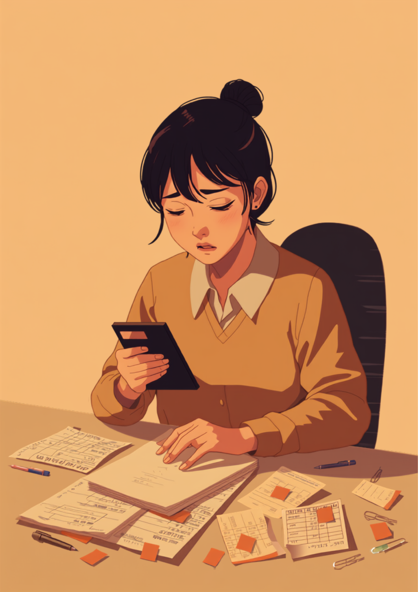

「計算だけ、なぜかできないんだろう」と感じたことはありませんか。学校の成績自体は普通だったのに、大人になって仕事を始めてから、おつりの計算や見積書の金額でつまずくことが増えた。そんな悩みの背景には、算数障害（ディスカリキュリア）と呼ばれる学習障害（LD）の特性が関わっている場合があります。この記事では、計算だけに苦手さを感じる方が仕事で直面しやすい場面と、電卓や工夫での対処法、伝え方を当事者の声をもとに整理しました（2026年8月時点の情報です）。
PR



目の前の数字が、なぜかいつまで経ってもすんなり頭に入ってこない
「計算だけ苦手」と気づいた日、算数障害という特性

算数障害（ディスカリキュリア）は、学習障害（LD）の一種です。読み書きや会話には特に困難がなく、計算や数の推論にだけ強い苦手さがみられる特性とされています。発症率は5〜7%程度ともいわれ、決して珍しいものではないようです。まめざる
就労支援の現場で関わってきた中で、こんな声を聞くことがあります。「テストの点数自体は悪くなかったのに、なぜか算数だけずっと苦手だった」というものです。計算障害（ディスカリキュリア）がある方の多くは、国語や社会などの科目では周囲と変わらない、あるいはそれ以上の力を発揮している場合もあるとされています。それでも数字や計算にだけ、本人にも説明のつかない苦手さを感じ続けてきたという方は少なくないようです。
学生時代は「算数が苦手な子」くらいで済んでいたことが、社会人になると急に困りごとの正体になることがあります。おつりの計算、見積書の金額、作業にかかる時間の見積もり。仕事には数字が絡む場面が驚くほど多く、その一つひとつで頭が真っ白になる感覚を抱えたまま働いている方もいるようです。
!
算数障害の特性や現れ方には個人差があります。この記事で挙げる内容がそのまま当てはまるとは限らないため、気になる症状がある場合は自己判断せず、専門機関に相談することをお勧めします。
「経理事務をもう8年くらいやっているんですが、実は未だに電卓なしでは二桁の引き算も怪しいんです。新人の頃、上司の前で暗算しようとして固まってしまって、『大学出てるのに、なんで』って言われたことがあって、その時のことは今でもたまに思い出します。テストの成績自体は普通だったし、国語や社会は得意だったので、自分でも『なんで数字だけ』ってずっと不思議でした。今は伝票を扱うときは必ず電卓とダブルチェック用のチェックリストを使うようにしていて、それを始めてから入力ミスがかなり減りました。恥ずかしいと思ってた時期の方が、実はミスが多かったなと今は思います。」
30代・女性（学習障害・経理事務職）
おつり・見積もり・スケジュール感覚、仕事で数字がつまずくポイント
算数障害がある方が仕事で感じやすい困りごとには、いくつかの共通点があるようです。とっさに頭の中で数字を保持しながら操作するという作業自体が、大きな負担になりやすいとされています。
とっさの暗算が求められる場面
レジでのおつり計算や、口頭でのざっくりした金額確認など、その場で瞬時に計算することを求められる場面は、特に負荷が高いとされています。後ろに人が並んでいる、上司が見ているといった状況が重なると、焦りでさらに頭が働かなくなってしまうという声もよく聞かれます。
電卓とダブルチェックを取り入れるだけで、ズレを感じる回数は大きく変わる
見積もりや割引計算の場面
見積書の金額や割引率の計算など、パーセントや桁数の感覚をつかむことが難しいと感じる方もいるようです。3％引きと3割引きを頭の中で混同してしまう、見積もりの金額が実際とかけ離れてしまう、といった困りごとが起きやすいとされています。
「居酒屋でバイトしてます。レジのお釣りを渡すとき、頭の中で1000円から680円を引く、みたいな計算がどうしても一瞬で出てこなくて、お客さんを待たせてしまうことがよくあって。半年くらい経った頃、店長に思い切って『暗算が苦手で、レジの時だけ電卓を横に置かせてもらえますか』って相談したら、意外とあっさり『別にいいよ』って言われて拍子抜けしました。それまで一人で抱えてたのがバカらしくなるくらい、あっさりでした。今もレジ担当の日は電卓が相棒です。」
20代・男性（算数障害・飲食店勤務）
作業時間の見積もりが難しい場面
「この作業はだいたい30分で終わる」といった時間の見積もりも、数量的な感覚を伴う作業のひとつです。実際にかかった時間と見積もりが大きくずれてしまい、スケジュール管理で苦労するという声も聞かれます。
「見積書を作るとき、割引率のパーセント計算がいつも怖くて。3％引きと3割引きを頭の中でごっちゃにしてしまって、3ヶ月前に一度、桁を間違えた見積もりをお客さんに送りかけて、送信直前に同僚が気づいてくれたことがあります。あの時は本当に血の気が引きました。それ以来、金額に関わる書類は必ず二人でチェックするルールを自分から提案して、今はそれが定着しています。苦手なことを隠すより、先に『ここは苦手だから見てほしい』って言った方が、結果的に楽だなと最近やっと思えるようになりました。」
40代・女性（学習障害・営業事務職）
i
算数障害があっても、バーコードを読み取るだけのレジなど、計算そのものが発生しない業務であれば負担が少ない場合があります。困りごとの現れ方は、業務内容によって変わるとされています。
電卓と工夫で乗り越える、職場への伝え方

「電卓を使うのは甘え」と思ってしまう方もいますが、それは違います。問題の解き方や仕事の中身はきちんと分かっているからこそ、計算という一つの作業だけをツールに任せる、という考え方をしてみませんか。まめざる
算数障害の特性がある方にとって、電卓や計算ソフトの使用は、合理的配慮の一つとして相談できる場合があります。数字そのものを扱う場面をツールに任せることで、本来の業務内容の理解や判断に集中しやすくなることがあるとされています。
相談の一コマ
相談者
急に「ちょっとレジお願い」って言われるのが一番怖いんです。お釣りの計算で頭が真っ白になって、後ろに人が並んでると余計に焦って、間違えたらどうしようってそればっかり考えてしまって。

まめざる
とっさに暗算しなきゃいけない場面って、算数障害の特性がある方にとっては本当に負荷が高い場面なんです。それは性格や努力の問題ではなく、脳の情報処理の特性によるものとされています。
相談者
そうなんですか…ずっと「自分の努力が足りないだけ」だと思ってました。
まめざる
焦らなくて大丈夫ですよ。「レジの時だけ電卓を使わせてほしい」のように、場面を絞って相談してみる方法があります。次に、実際にどう伝えたらいいか一緒に見ていきましょう。
特性の詳細をすべて説明する必要はありません。業務に関わる具体的な場面に絞って、次のように伝えている方もいるようです。
- 「金額に関わる作業は電卓を使わせてもらえますか」
- 「見積書は、金額だけ別の人にダブルチェックしてもらいたいです」
- 「レジ対応は、バーコード読み取りのみの担当にしてもらえると助かります」
- 「時間の見積もりは、実績を記録しながら少しずつ精度を上げていきたいです」
電卓を使うことも、ダブルチェックをお願いすることも、甘えではありません。苦手な部分を仕組みで補うことで、本来の力を発揮しやすくなる場合があります。
使える制度と、一人で抱えないための相談先
精神障害者保健福祉手帳という選択肢
学習障害は精神障害者保健福祉手帳の対象となる場合がありますが、算数障害の程度や日常生活への影響によって判断は異なるとされています。詳しくは主治医や自治体の障害福祉窓口に確認するのが確実です（2026年8月時点の情報です）。手帳を取得すると、障害者雇用枠での就職や、企業側の合理的配慮を前提にした働き方を選びやすくなる場合があります。
相談できる窓口
- 発達障害者支援センター（特性の整理や、働き方についての相談）
- 主治医・医療機関（診断や意見書についての相談）
- 職場に選任されている産業医（50人以上の事業場に選任義務あり）
- 就労移行支援事業所（業務ツールの選定を含めた就労準備や職場との調整）
算数障害の程度や、必要な配慮の内容には個人差があります。この記事の内容がそのまま当てはまるとは限らないため、実際の判断は主治医・支援者・自治体の窓口とよく相談しながら進めることをお勧めします（2026年8月時点の情報です）。
よくある質問
Q. 計算障害（ディスカリキュリア）とはどんな特性ですか？
学習障害（LD）の一種で、計算や数の推論に関する困難がみられる特性とされています。読み書きや会話には特に問題がなく、国語や社会など他の科目は周囲と変わらない場合も多いとされていますが、数字や計算にだけ強い苦手さを感じるケースがあるようです。程度や現れ方には個人差があります。
Q. 算数以外の科目は得意なのに、計算だけ苦手というのはよくあることですか？
そうしたケースは珍しくないとされています。学習障害は特定の能力にだけ困難が生じる場合があり、他の科目の成績が良くても、計算や数量の把握だけに苦手さが偏ることがあるようです。気になる場合は、専門機関での相談を検討してみるのも一つの方法です。
Q. 職場で電卓の使用を頼んでもいいのでしょうか？
合理的配慮の一環として、電卓や計算ソフトの使用を相談している方もいるようです。問題の解き方自体は理解していても暗算や筆算の負荷が高い場合、ツールを使うことで本来の業務に集中しやすくなる場合があるとされています。まずは業務に関わる具体的な場面を絞って相談してみることをお勧めします。
Q. 算数障害だけでも精神障害者保健福祉手帳は取得できますか？
学習障害は精神障害者保健福祉手帳の対象となる場合がありますが、算数障害の程度や日常生活への影響によって判断は異なるとされています。詳しくは主治医や自治体の障害福祉窓口にご確認ください（2026年8月時点の情報です）。
Q. 計算が苦手なことを、どう職場に伝えればいいですか？
特性の詳細をすべて説明する必要はないとされています。「金額に関わる作業は電卓を使わせてほしい」「見積書は二人でチェックする体制にしたい」など、業務に関わる具体的な場面に絞って伝える方法が、双方にとって負担が少ないとされています。
気づいて、伝えて、工夫する。それだけで数字との距離は変わっていく
PR


一人で抱え込む前に、今の気持ちを話してみませんか
「まだ迷っている」段階でも大丈夫です。mimemimeの無料相談は、今の状況の整理から一緒に始められます。
無料で話してみる
おのざる
mimemime代表。就労支援の現場経験をもとに、障がいのある方の働く不安に寄り添う記事を執筆。